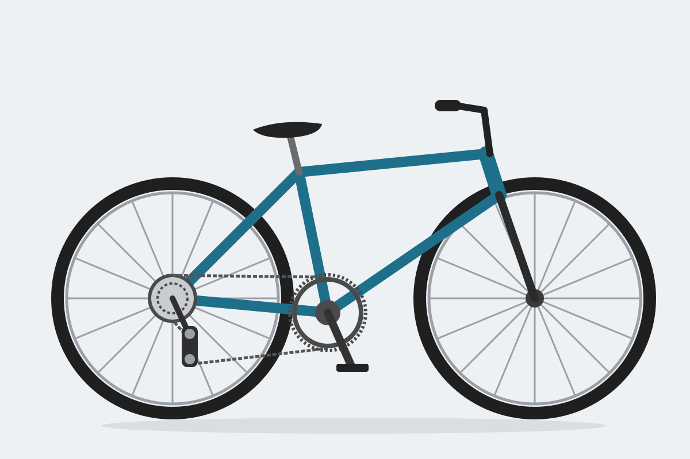

Z čoho sa skladá bicykel

Zadné koleso
V strede kolesa sú ozubené kolieska pre reťaz. Podľa toho, na ktorom je reťaz, sa šliape ľahšie alebo ťažšie.
Prehadzovačka
Pri preraďovaní presúva reťaz z jedného ozubeného kolieska na druhé.
Riadidlá
Sú na nich brzdové páky a radenie.
Text pod obrázkom, aby bolo vidieť, čo sa deje s obsahom pod ním.
Kliknite do obrázka a zobrazia sa súradnice bodu: